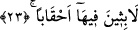

etmek için yapılır. Azab ise kâfirler ve bedbahtlar için söz konusudur.
“Li’t-tâğîn” lafzı ya “hüve” gizli zamîrine bağlıdır ya da “gözetleme yeri” anlamına
gelen “mirsâd” kelimesinin sıfatıdır. Biz âyetin meâlinde kelimeye sıfatmış gibi bir
karşılık verdik.
“Dönüş yeri” anlamındaki “meâben” kelimesi “tâğîn” kelimesinden bedeldir. Şu halde
âyet; “cehennem hiç kuşkusuz azgınların varıp dönecek oldukları bir gözetleme yeridir”
anlamına gelmiş olmaktadır.
“Li’t-tâğîn” kelimesi, “meâben” kelimesinden hal de olabilir. Bu takdirde hal, hal
olduğu kelimenin önüne geçmiştir. Öne geçmesinin nedeni ise kelimenin nekre
olmasından dolayıdır. Eğer kelime “meâben” kelimesinden sonra gelseydi o takdirde bu
kelimenin sıfat olduğunu söylemek gerekecekti.
22. Azgınların barınağı olacak
“Tağîn” kelimesinin tekili olan “tağî” azgınlaşan kişi demektir. Âlimlerin ifâdesine
göre azgın kişi inkâr ederek dininde, zulmederek dünyasında azgınlaşan kişidir. Sözlük
itibariyle “tağî” isyanda haddi aşan demektir. Âyette bu kelimeyle kasdedilen,
müşriklerdir. Böyle olduğunu âyetin devamı göstermektedir. Azgınların azabları
sonsuzdur. Çünkü onların inançları bâtıldır. Kökten hiçbir şeye inanmayan azgınların
azabları da sonsuzdur. İsyankâr mümin gibi itikadı ve inancı sahih azgınların ise
azabları sonsuz değil, sonludur.
23. (Azgınlar) orada çağlar boyu kalırlar.
Buradaki “lâbisîne fîhâ/orada kalırlar” ifâdesi “tağîn/azgınlar” kelimesindeki
zamirden mukadder haldir. Buna göre âyete mânâ verecek olursak; “azgınların orada
çağlar boyu kalmaları takdir edilmiş olarak bir serinlik tatmazlar...” demek olur. Bu
kelimenin kökü olan “lebs”, insanın herhangi bir mekanda, oradan hemen hemen hiç
ayrılmamacasına durması ve kalması demektir. Bundan ötürü Arapçada “lebise bi’l-
mekan” dendiğinde bunun anlamı “filanca kişi filanca yerde, ordan hiç ayrılmamacasına
durdu, kaldı” demektir.
“Çağlar boyu” şeklinde tercüme ettiğimiz “ahkaben” kelimesi yukarda geçen
“lebs/kalmak” kelimesinin zarfıdır. Kelimenin tekili “hukb” şeklindedir. Hukb;
Kamus’ta ifâde edildiği üzere seksen yıl veya daha fazla bir sene, dehr, sene veya yıllar
anlamına gelir. Kelimenin kökü “peşipeşine gelmek, birşeyin ardından izleyip takip